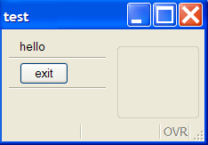
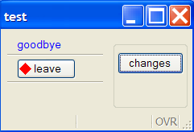
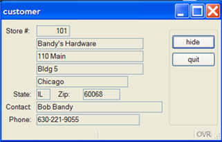
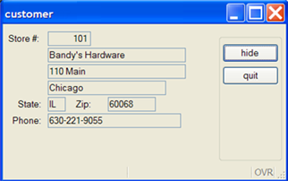
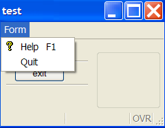
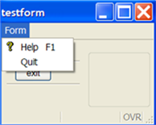
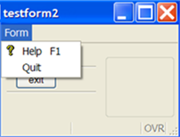
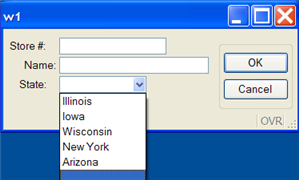

Summary:
Included in the predefined functions that are built into Genero are special groups (classes) of functions (methods) that act upon the objects that are created when your program is running. Each class of methods interacts with a specific program object, allowing you to change the appearance or behavior of the objects. Because these methods act upon program objects, the syntax is somewhat different from that of functions.
The classes are gathered together into packages:
This tutorial focuses on using the classes and methods in the ui package to modify the user interface at runtime.
Note: Variable names, class identifiers, and method names are not case-sensitive; the capitalization used in the examples is for ease in reading.
This example for the Window Class also presents the general process that you should use.
The methods in the Window Class interact with the Window objects in your program.
Before you can call any of the methods associated with Window objects, you must identify the specific Window object that you wish to affect, and obtain a reference to it:
DEFINE mywin ui.Window
OPEN WINDOW w1 WITH FORM "testform"
LET mywin = ui.Window.getCurrent() -- returns a reference to
the current window object
LET mywin = ui.Window.forName("w1")-- returns a reference to
the open window named "w1"
Now that you have a reference to the object, you can use that reference to call any of the methods listed as "object methods" in the Window Class documentation. For example, to change the window title for the window referenced by mywin:
CALL mywin.setText("test")
See Window Class for a complete list of the methods in this class.
01MAIN02DEFINE mywin ui.Window0304OPEN WINDOW w1 WITH FORM "testform"05LET mywin = ui.Window.getCurrent()06CALL mywin.setText("test")07MENU08ON ACTION quit09EXIT MENU10END MENU1112END MAIN
Display on Windows platforms:

The Form Class provides some methods that allow you to change the appearance or behavior of items on a form.
In order to use the methods, you must get a reference to the form object. The Window Class has a method to get the reference to its associated form:
DEFINE f1 ui.Form, mywin ui.Window
OPEN WINDOW w1 WITH FORM ("testform")
LET mywin = ui.Window.getCurrent() LET f1 = mywin.getForm() -- returns reference to form
Once you have the reference to the form object, you can call any of the object methods for the Form class:
LET mywin = ui.Window.getCurrent()
LET f1 = mywin.getForm() -- get reference to form
-- call a Form Class method
CALL f1.loadActionDefaults("mydefaults")
See the Form Class documentation for a complete list of methods.
Some of the methods in the Form Class require you to provide the name of the form item. The name of the form item in the Attributes section of the form specification file corresponds to the name attribute of an element in the runtime form file. For example:
LABEL a1 : lb1, TEXT = "State"; EDIT a2 = state.state_name; BUTTON a3 : quit, TEXT = "exit"; EDIT a4 = FORMONLY.pflag TYPE CHAR;
<Label name="lb1" width="9" text="State" posY="0" posX="6" gridWidth="9"/> <FormField name="state.state_name" colName="state_name" sqlType="CHAR(15)" fieldId="0" sqlTabName="state" tabIndex="1"> <Button name="quit" width="5" text="exit" posY="4" posX="6" gridWidth="5"/> <FormField name="formonly.pflag" colName="pflag" sqlType="CHAR" fieldId="1" sqlTabName="formonly" tabIndex="2">Note: Formfield names specified as FORMONLY (FORMONLY.pflag) are converted to lowercase (formonly.pflag).
Although Genero BDL is not case-sensitive, XML is. When Genero creates the runtime XML file, the form item types and attribute names are converted using the CamelCase convention:
If you use classes or methods in your code that require the form item type or attribute name, respect the naming conventions.
Some methods of the Form Class allow you to change the value of specific properties of form items.
Call the methods using the reference to the form object. Provide the name of the form item and the value for the property:
CALL f1.setElementText("lb1", "Newtext")
CALL f1.setElementImage("quit", "exit.png")
CALL f1.setElementStyle("lb1", "mystyle")The style "mystyle" is an example of a specific style that was defined in a custom Presentation Styles XML file, customstyles.4st. This style changes the text color to blue:
<Style name=".mystyle" > <StyleAttribute name="textColor" value="blue" /> </Style>By default, the runtime system searches for the default.4st Presentation Style file. Use the following method to load a different Presentation Style file:
CALL ui.interface.loadStyles("customstyles")The Load custom XML files section has more information about the Interface class. See Presentation Styles for additional information about styles and the format of a Presentation Styles file.
01MAIN02DEFINE mywin ui.Window,03f1 ui.Form04CALL ui.interface.loadStyles("customstyles")05OPEN WINDOW w1 WITH FORM "testform"06LET mywin = ui.Window.getCurrent()07CALL mywin.setText("test")08LET f1 = mywin.getForm()09MENU10ON ACTION changes11CALL f1.setElementText("lb1", "goodbye")12CALL f1.setElementText("quit", "leave")13CALL f1.setElementImage("quit", "exit.png")14CALL f1.setElementStyle("lb1", "mystyle")15ON ACTION quit16EXIT MENU17END MENU18END MAIN
Display on Windows platform after the changes button has been clicked:

You can use Form Class methods to change the value of the hidden property of form items, hiding parts of the form from the user. Interactive instructions such as INPUT or CONSTRUCT will automatically ignore a formfield that is hidden. The value can be:
By default, all form items are visible.
Call the methods using the reference to the form object. Provide the name of the form item to the method and set the value for hidden.
CALL f1.setFieldHidden("state_name",1)
CALL f1.setElementHidden("lb1", 1)
CALL f1.setElementHidden("state.state_name",1)
CALL f1.setElementHidden("formonly.pflag",1)
Genero adjusts the display of the form to eliminate blank spaces caused by hiding items, where possible.
01SCHEMA custdemo02MAIN03DEFINE win ui.Window,04fm ui.Form,05mycust record like customer.*06CONNECT TO "custdemo"07OPEN WINDOW w1 WITH FORM "hidecust"08SELECT * INTO mycust.* FROM customer09WHERE store_num = 10110DISPLAY BY NAME mycust.*11LET win = ui.Window.getCurrent()12LET fm = win.getForm()13MENU14ON ACTION hide15CALL fm.setFieldHidden("contact_name",1)16CALL fm.setFieldHidden("addr2", 1)17-- hide the label for contact name18CALL fm.setElementHidden("lbl", 1)19ON ACTION quit20EXIT MENU21END MENU22END MAIN
Display on Windows platforms (before hiding):


The Form Class provides methods that apply topmenus, toolbars, and action defaults to a form, to assist you in standardizing forms. The topmenus, toolbars, or action defaults are defined in external XML files having the following extensions:
Call the methods using the reference to the form object and give the filename. Do not specify a path or file extension in the file name. If the file is not in the current directory and the path is not specified, Genero will search the directories indicated by the DBPATH/FGLRESOURCEPATH environment variable.
CALL f1.loadActionDefaults("mydefaults")
CALL f1.loadToolBar("mytoolbar")
CALL f1.loadTopMenu("mytopmenu")
01MAIN02DEFINE mywin ui.Window,03f1 ui.Form04OPEN WINDOW w1 WITH FORM "testform"05LET mywin = ui.Window.forName("w1")06CALL mywin.setText("test")07LET f1 = mywin.getForm()08CALL f1.loadTopMenu("mytopmenu")09MENU10ON ACTION quit11EXIT MENU12END MENU1314END MAIN
Display on Windows platforms:

To assist in standardizing forms, you can create an initializer function in your program that will be called automatically whenever any form is opened. A reference to the form object is passed by the runtime system to the function.
Example initializer function:
01FUNCTION myforminit(f1)02DEFINE f1 ui.Form0304CALL f1.loadTopMenu("mytopmenu")05...0607END FUNCTION
The setDefaultInitializer method applies to all forms, rather than to a specific form object. It is a class method, and you call it using the class name as a prefix. Specify the name of the initializer function in lower-case letters:
CALL ui.Form.setDefaultInitializer("myforminit")
You can call the myforminit function in your program as part of a setup routine. The myforminit function can be in any module in the program.
01MAIN02CALL ui.Form.setDefaultInitializer("myforminit")03OPEN WINDOW w1 WITH FORM "testform"04MENU05ON ACTION quit06EXIT MENU07END MENU08OPEN WINDOW w2 WITH FORM "testform2"09MENU10ON ACTION quit11EXIT MENU12END MENU13END MAIN
Display on Windows platforms:


A ComboBox presents a list of values in a dropdown box on a form. The values are for the underlying formfield. For example, the following form specification file contains a ComboBox that represents the formfield customer.state:
01SCHEMA custdemo02LAYOUT03GRID04{05Store #:[a0 ]06Name:[a1 ]07State:[a5 ]08}09END -- GRID10END11TABLES customer12ATTRIBUTES13EDIT a0=customer.store_num;14EDIT a1=customer.store_name;15COMBOBOX a5=customer.state;16END
During an INPUT, INPUT ARRAY or CONSTRUCT statement the ComboBox is active, and the user can select a value from the dropdown list. The value selected will be stored in the formfield named customer.state.
The ComboBox Class contains methods that manage the values for a ComboBox. In order to use these methods you must first obtain a reference to the ComboBox object:
DEFINE cb ui.ComboBox
OPEN WINDOW w1 WITH FORM ("testcb")
LET cb = ui.ComboBox.forName("customer.state")
Once you have a reference to the ComboBox object, you can call any of the methods defined in the class as "object methods":
You can instruct the ComboBox to store a code (the "name") in the formfield that the ComboBox represents, but to display the description (the "text") in the list to help the user make his selection. For example, to store the value "IL" (name) in the formfield, but to display "Illinois" (text) to the user:
CALL cb.additem("IL", "Illinois")If text is NULL, name will be displayed.
CALL cb.clear()
CALL cb.removeitem("IL")
See the ComboBox Class documentation for a complete list of the methods.
An example in Tutorial Chapter 5 GUI Options loads a ComboBox with static values. The following example retrieves the valid list of values from a database table (state) instead:
01SCHEMA custdemo02MAIN03DEFINE cb ui.ComboBox04CONNECT TO "custdemo"05OPEN WINDOW w1 WITH FORM "testcb"06LET cb = ui.ComboBox.forName("customer.state")07IF cb IS NOT NULL THEN08CALL loadcb(cb)09END IF10...11END MAIN1213FUNCTION loadcb(cb)12DEFINE cb ui.ComboBox,13l_state_code LIKE state.state_code,14l_state_name LIKE state.state_name1518DECLARE mycurs CURSOR FOR 19 SELECT state_code, state_name FROM state20CALL cb.clear()21FOREACH mycurs INTO l_state_code, l_state_name22-- provide name and text for the ComboBox item23CALL cb.addItem(l_state_code,l_state_name)24END FOREACH26END FUNCTION
Display on Windows platforms

As an alternative to calling the loadcb function in your BDL program, this function can be specified as the initializer function for the ComboBox in the form specification file. When the form is opened, The initializer function is called automatically and a reference to the ComboBox object is passed to it. Provide the name of the initializer function in lowercase:
ATTRIBUTES COMBOBOX a5=customer.state, INITIALIZER = loadcb;
The Dialog Class provides methods that can only be called from within an interactive instruction (dialog) such as MENU, INPUT, INPUT ARRAY, DISPLAY ARRAY and CONSTRUCT. The methods are called through the predefined variable DIALOG, which automatically provides a reference to the Dialog object.
Tutorial Chapter 5 Enhancing the Form illustrates the use of Dialog Class methods to disable/enable actions during a MENU interactive statement.
To hide default action views (the buttons that appear on the form when there is no specific action view for an action), use the following Dialog Class method. Values for the hidden state of the action view can be:
MENU
BEFORE MENU
CALL DIALOG.setActionHidden("next",1)
...
END MENU
This example hides the action that has the name next. The reference to the DIALOG object was provided by the runtime system.
This method in the Dialog Class allows you to disable fields on a form during the interactive statement; the field is still visible, but the user cannot edit the value. Values for the active state of the field can be:
The reference to the DIALOG object is provided by the runtime system. Provide the name of the field and its state to the method.
The following example disables the store_name field during an INPUT statement:
INPUT BY NAME customer.*
BEFORE INPUT
CALL DIALOG.setFieldActive("customer.store_name",0)
...
END INPUT
See the Dialog Class documentation for a complete list of its methods.
Methods in the Interface Class allow you interact with the user interface, as shown in the examples below.
You do not need to get an object reference to the Interface; call the methods in the Interface Class using the class identifier, ui.Interface.
The User Interface on the Client is synchronized with the DOM tree of the runtime system when an interactive statement is active. If you want to show something on the screen while the program is running in a batch procedure, you must force synchronization with the front end.
As shown in the Tutorial Chapter 9 Reports, the changes made in the program to the value of the progress bar are not displayed on the user's window, since the report is a batch process and no user interaction is required. To force the changes in the progress bar to be reflected on the screen, the following method from the Interface Class is used:
CALL ui.Interface.refresh()
Use the appropriate extension:
- Start Menu - .4sm
- Toolbar - .4tb
- Topmenu - .4tm
Use the corresponding method to load the file:
CALL ui.Interface.loadStartMenu("mystartmenu")CALL ui.Interface.loadTopMenu("tmstandard")CALL ui.Interface.loadToolbar("tbstandard")Do not specify a path or file extension in the file name. The runtime system automatically searches for a file with the correct extension in the current directory and in the path list defined in the DBPATH/FGLRESOURCEPATH environment variable.
See the Start Menu, Topmenu, or Toolbar documentation for details on the format and contents of the files.
Custom Presentation Styles and global Action Defaults must each be defined in a unique file.
Use the appropriate extension:
Presentation Styles - .4st
Action Defaults - .4ad
Use the corresponding method to load the file:
CALL ui.Interface.loadStyles("mystyles")CALL ui.Interface.loadActionDefaults("mydefaults")
You can provide an absolute path with the corresponding extension, or a simple file name without the extension. If you give the simple file name, the runtime system searches for the file in the current directory. If the file does not exist, it searches in the directories defined in the DBPATH/FGLRESOURCEPATH environment variable.
The action defaults are applied only once, to newly created elements. For example, if you first load a toolbar, then you load a global Action defaults file, the attribute of the toolbar items will not be updated with the last loaded Action defaults.
See Presentation Styles and Action Defaults for details on the format and contents of the file.
You can use methods in the Interface Class to identify the type and version of the Genero client currently being used by the program:
CALL ui.Interface.getFrontEndName() RETURNING typestringCALL ui.Interface.getFrontEndVersion() RETURNING versionstring
Each method returns a string. The type will be "Gdc" or "Console".
Some of the other methods in the ui.Interface class allow you to:
See the Interface Class documentation for a complete list of the methods.